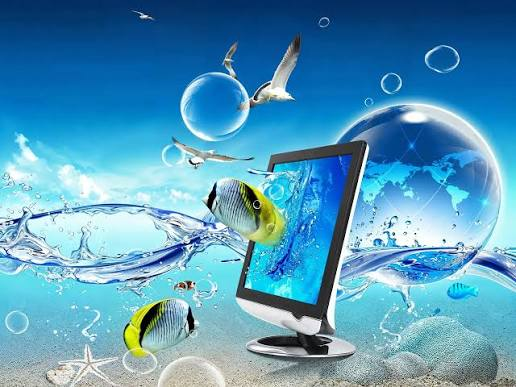

My First Steps in Web Development

This week I built my first blog page. Starting with a few HTML elements helped me see how a document becomes a website. Each heading, paragraph, and image has a specific place in the story I want to share. Understanding semantic markup ensures that the site remains accessible and well-structured for everyone.
CSS made the biggest visual difference. I experimented with spacing, colours, and typography, then used Grid to arrange the main content and sidebar. Small changes made the page much easier to read. Seeing layout concepts like Flexbox and Grid come together in code has made web development both intuitive and rewarding.